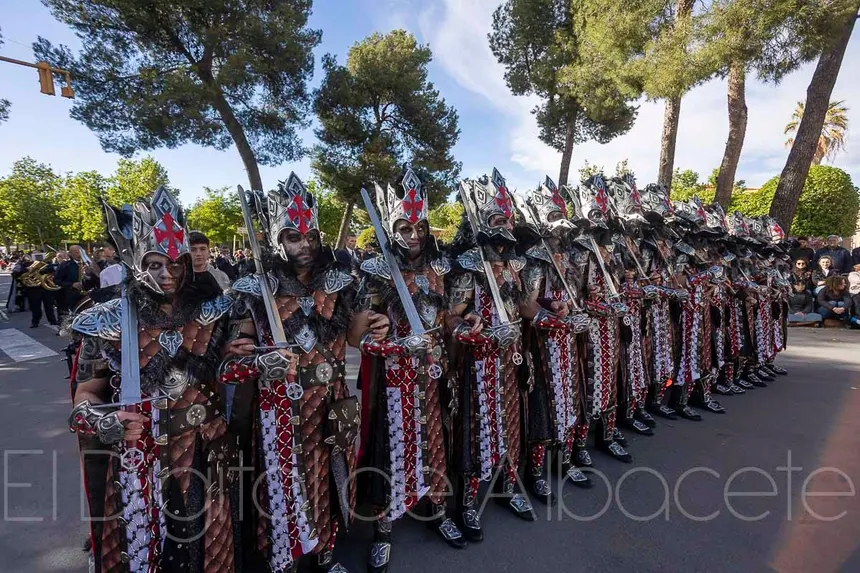
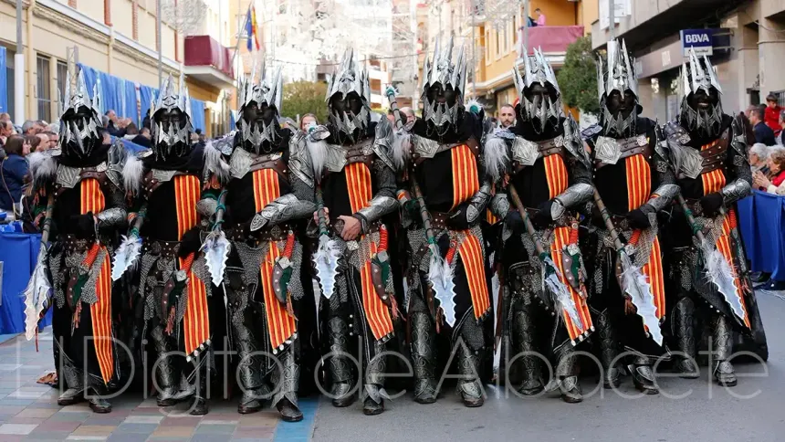

Eventos Principales

Gran Entrada Mora
La Gran Entrada Mora es uno de los actos más destacados y espectaculares de las Fiestas Mayores de Almansa. Se celebra el 1 de mayo a las 17:45 y consiste en un desfile triunfal de las huestes del bando moro, que avanzan por la calles de la ciudad hasta el Castillo de Almansa.
Gran Entrada Cristiana
La Gran Entrada Cristiana es uno de los actos centrales de las Fiestas mayores de Almansa, celebrado el 3 de mayo a las 18:15 como parte de la representación de la Reconquista de la Península Ibérica. Este desfile triunfal conmemora la entrada de las huestes cristianas tras recuperar la fortaleza de Almansa del dominio moro.


Embajada Mora
La Embajada Mora Nocturna es el acto centras más destacado de las Fiestas Mayores de Almansa, celebrado cada año en la noche del 2 al 3 de mayo. Se trata de una representación escénica que combina historia, mito, y efectos especiales, con grandes despliegues de pirotecnia, luces, música y actuaciones los embajadores.
Embajada Cristiana
La Embajada Cristiana en las Fiestas de Mayo es uno de los actos centrales de las celebraciones de Moros y Cristianos, que se celebra el día 4 de mayo a las 12:30. Este evento representa la respuesta cristiana a la embajada mora y culmina con el momento más emotivo: la Conversión del Moro, en el que el representante moro se arrodilla ante la imagen de la Virgen de Belén, ubicada en la fachada de la iglesia arciprestal de la Asunción, y se convierte al cristianismo.
Procesión
Ofrenda Floral